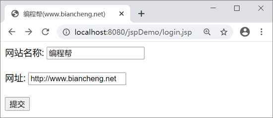
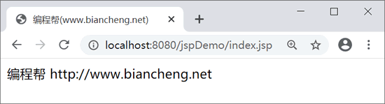
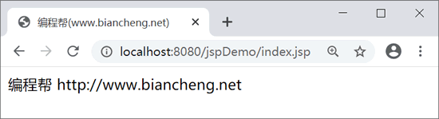

JSP setProperty和getProperty动作
<jsp:getProperty> 动作用于获取 Bean 的属性值，<jsp:setProperty> 动作用于设置 Bean 的属性值。
<jsp:setProperty> 通常和 <jsp:useBean> 一起使用，分为两种情况。
1. 在 <jsp:useBean> 标签外使用 <jsp:setProperty> ，例如：
2. 在 <jsp:useBean> 标签里使用 <jsp:setProperty> ，例如：
运行结果如下：
<jsp:getProperty>
<jsp:setProperty> 的语法如下：<jsp:setProperty name = "beanName" property = "attributeName" value = "attributeValue"/>其中，name 指定需要修改属性的 Bean 的名称；property 指定 Bean 的属性，即 Bean 类中的属性；value 是要设定的属性值。
<jsp:setProperty> 通常和 <jsp:useBean> 一起使用，分为两种情况。
1. 在 <jsp:useBean> 标签外使用 <jsp:setProperty> ，例如：
<jsp:useBean id = "User" ... /> ... <jsp:setProperty name = "User" property = "attributeName" value = "attributeValue"/>以上情况，无论 <jsp:useBean> 是否实例化了 User 对象，<jsp:setProperty> 都会执行。
2. 在 <jsp:useBean> 标签里使用 <jsp:setProperty> ，例如：
<jsp:useBean id = "User" ...>
...
<jsp:setProperty name = "User" property = "attributeName" value = "attributeValue"/>
</jsp:useBean>
以上情况，只有 <jsp:useBean> 实例化了 User 对象，<jsp:setProperty> 才会执行。
<jsp:getProperty>
<jsp:getProperty> 的语法如下：<jsp:getProperty name = "beanName" property = "attributeName">其中，name 指定需要获取属性的 Bean 的名称；property 指定 Bean 的属性，即 Bean 类中的属性。
注意：<jsp:setProperty> 和 <jsp:getProperty> 动作都会按照 page、request、session 和 application 的顺序依次查找指定 Bean 的实例对象，直到第一个实例被找到。如果任何范围内都不存在这个 Bean 实例，则会拋出异常。
示例
创建 Bean 类 Site.java，代码如下：
package net.biancheng;
public class Site {
private String name;
private String url;
public String getName() {
return name;
}
public void setName(String name) {
this.name = name;
}
public String getUrl() {
return url;
}
public void setUrl(String url) {
this.url = url;
}
}
login.jsp 代码如下：
<%@ page language="java" contentType="text/html; charset=UTF-8"
pageEncoding="UTF-8"%>
<!DOCTYPE html>
<html>
<head>
<title>编程帮(www.biancheng.net)</title>
</head>
<body>
<form action="index.jsp" method="post">
网站名称: <input type="text" name="name" /> <br> <br>
网址: <input type="text" name="url" /> <br> <br>
<input type="submit" value="提交" />
</form>
</body>
</html>
index.jsp 代码如下：
<%@ page language="java" contentType="text/html; charset=UTF-8"
pageEncoding="UTF-8"%>
<!DOCTYPE html>
<html>
<head>
<title>编程帮(www.biancheng.net)</title>
</head>
<body>
<%
request.setCharacterEncoding("UTF-8");
%>
<jsp:useBean id="site" class="net.biancheng.Site" />
<jsp:setProperty property="*" name="site" />
<jsp:getProperty property="name" name="site" />
<jsp:getProperty property="url" name="site" />
</body>
</html>
注意：当 property 的取值为 * 时，要求 Bean 属性的名称与类型要与 request 请求中参数的名称及类型一致，以便用 Bean 中的属性来接收客户输入的数据，系统会根据名称来自动匹配。运行结果如下：

login.jsp 运行结果

index.jsp运行结果
login.jsp 运行结果

index.jsp运行结果
关注公众号「站长严长生」，在手机上阅读所有教程，随时随地都能学习。内含一款搜索神器，免费下载全网书籍和视频。

微信扫码关注公众号